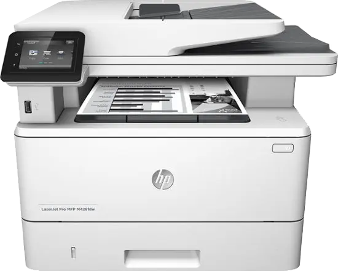

Thay mực máy in hp MFP M436 tại TP HCM - Giá Rẻ Nhất
Chuyên Bơm mực máy in HP M436N - M436DN - M436DNA
" GIÁ RẺ NHẤT "
Tel: 089 886 9964 - ZALO: 0934 39 3550
Chuyên: Bơm mực máy in tận nơi cho công ty Doanh nghiệp, Nạp mực máy in HP MFP M436 tại nhà giá rẻ
Máy in HP LaserJet MFP M436n Printer (W7U01A). Loại máy: In đa năng Laser trắng đen A3, Chức năng: Print, Copy, Scan, Khổ giấy in: Tối đa khổ A3. Tốc độ in: 23 trang / phút, Độ phân giải: Optical: 600 x 600 x 2 bit dpi Enhanced: 1200 x 1200 dpi, Tốc độ xử lý: 600Mhz, Bộ nhớ ram: 128MB. Chuẩn kết nối: High speed USB 2., Network, Chức năng đặc biệt: In mạng có sãn. Hiệu suất làm việc: 50.000 trang / tháng.

- Thay mực máy in Hp M435, Hp MFP M436 tận nơi
- Bơm mực máy in các loại 12A, 35A, 49A, 17A, 18A...
- Đổ mực in phun màu tại nhà chuyên nghiệp
- nạp mực máy in laser trắng đen các loại: hp - Canon - Samsung - Brother...
- Thay mực máy in laser màu tại quận tân bình
- Sửa máy in tận nơi nhanh chóng.
- Nạp mực 17A chỉ với 150K
Xem thêm : Giá nạp mực máy in hp m404
Bơm mực hp 436n tận nơi TpHCM
- Nạp mực máy in tại nhà
- Dịch vụ bơm mực máy in tại nhà.
- Hi-tech luôn làm việc thứ 7, chủ nhật và ngày nghĩ lễ - 24/7
- Nạp mực máy in giá rẻ - tiết kiệm chi phí cho khách hàng.
- Sử máy in tận nơi nhanh và đảm bảo uy tín
- Hitech Luôn nhận trách trách nhiệm nếu có sự cố xẩy ra.
- Nạp mực máy in, sửa máy in, máy tính luôn đi kèm với chế độ bảo hành.
- Bản in luôn đẹp sau khi nạp mực và in test.
- Chỉ nhận thanh toán khi khách hàng hài lòng về chất lượng và dịch vụ
- Hướng dẫn, hỗ trợ sửa miễn phí qua điện thoại
- Với công ty, doanh nghiệp có thể thanh toán công nợ vào cuối tháng.
Giá nạp mực máy in HP Laserjet MFP M436N là bao nhiêu tiền ?
Máy in A3 MFP M436N có giá bơm mực + Thay chip hp m436 giá khoản từ 550k - 650k, mực nạp cho máy in hp MFP M436 là loại mực nhập khẩu từ japan, có dung 160Gb cho mỗi lần nạp,
Công ty Mực In Hi-Tech tại tphcm nhận bơm mực máy in hp m436 tại tất cả các quận huyện tphcm, nạp mực tận nơi, tại nhà khách hàng có mặt nhanh nhất chỉ 20 phút.
Cấu hình chức năng của máy in HP MFP M436N: In - Photo - copy - Scan, In giấy khổ a3,a4,a5, Cổng giao tiếp usb, Cổng mạng lan, 23 PPM khổ A4, 12PPm khổ A3, độ phân giải 600x600 DPI, sửa dụng hộp mực HP CF 256A
Ngoài dịch vụ thay mực máy in hp MFP M436N, công ty chúng tôi còn nhận sửa máy in tại nhà giá rẻ, thay thế linh kiện chính hãng,
Cách thức nạp mực máy in Hp MFP M436N - HP MFP M436DN
Hướng dẫn tự bơm mực máy in Hp M436DN
Với nhu cầu sử dụng mực in hiện nay đang tăng cao, mỗi khi sử dụng hết hộp mực lại thay thế hợp mới thì rất tốn kém chi phí cho người tiêu dùng. Nhằm đáp ứng nhu cầu này, ngày nay người ta sử dụng lại hộp mực như giải pháp in ấn tiết kiệm giúp người dùng giảm rất nhiều chi phí mà không phải lo về chất lượng .
Nạp mực chất lượng luôn tuân thủ các bước:
· Dùng máy chuyên dụng hút sạch khoan mực thừa
· Kiểm tra lại toàn bộ linh kiện
· Dùng các chất chuyên dụng bôi lên các linh kiện hộp mực nhằm tăng tuổi thọ sử dụng
· Thực hiện phương pháp nạp
· Theo dõi số lần nạp mực
· Vệ sinh lại toàn hộp mực trước khi giao cho khách
Giá Bơm Mực In
Sửa máy in Hp M436N
Công ty Hi-Tech nhận sửa tất cả các lỗi máy in hp m436 tận nơi tại tphcm, ở tất cả các quận huyện như quận1, quận 3, quận 5, quận 10, quận tân bình, quận tân phú, quận bình tân, quận phú nhuận, quận bình thạnh, quận gò vấp, quận 11 ...
Sửa các lỗi thông thường như:
- Sửa lỗi máy in hp m436 DN báo lỗi đèn đỏ
- Máy in M635N không nhận mực
- Máy hết chíp
- Sửa lỗi máy Hp M436 bị kẹt giấy,
- Máy Hp M436 không in được và báo đèn toner
- Sửa hộp mực in bị lem
- Sửa lỗi máy in không lên nguồn ...
- hướng dẫn sửa lỗi máy in bị nhòe mực ...
Tham khảo:
- Hướng dẫn cách nạp mực máy in HP M102, M130
- Hộp mực 17A bị lem khi nạp - tại sao ?
Thay mực in hộp 56a Giá rẻ
Các Dịch Vụ Liên Quan Tại HCM
- Công Ty Nạp mực máy in A3 56A tận nơi quận Tân Phú
- Công Ty Bơm mực máy in A3, A4 ở quận Bình Thạnh
- Công Ty Bơm mực máy in màu các loại như Hp M 435, Canon, Brother ...
- Công Ty Thay mực máy in Samsung tận nơi quận 1 HCM
- Dịch Vụ Nạp mực máy in Brother ở quận 3
- Công Ty Đổ mực máy in Recoh tận nơi quận 4 HCM
- Dịch vụ Đổ mực máy in HP MFP M436 tại nhà quận 5 TPHCM
- Dịch vụ Nạp mực máy in Lexmark ở quận 10 HCM
- Dịch vụ thay mực tại quận tân bình máy in hp, canon tại HCM
- Cửa Hàng Đổ mực máy in các loại Panasonic, xerox, recoh ở quận
- Bơm mực máy in uy tín, giá rẻ ở quận tân phú tại Tp. HCM
Ngoài đổ mực máy in tại nhà quận 5 còn có các dịch vụ như
- Dịch vụ tận nơi Sửa máy in bị kẹt giấy ở quận 1
- Dịch vụ Sửa máy in báo lỗi đèn đỏ, không in được tại quận 11
- Sửa máy in tại nhà không láy giấy lên được ở quan Binh Thanh
- Sửa máy in tại nhà bị hư không in được tại nhà quận Phú Nhuận Tp HCM
- Sửa máy in tại nhà không lên nguồn ở quận tan phu HCM
- Sửa máy in tận nơi bị lem, nhòe mực ở quận tan phu
- Sửa máy in không nhận mực in ở quận tan phu Tp. HCM
- Sửa máy In nhanh và rẻ ở quận tân phú
- Bơm mực in gần đây